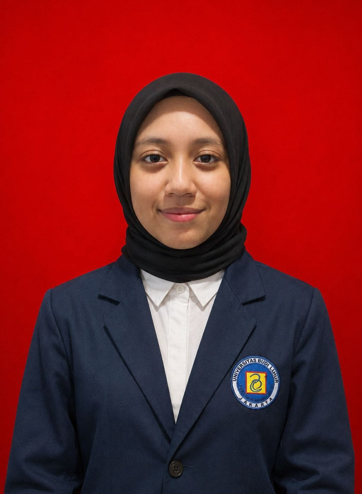

Queena Kaila Alyndra
ㅤ
ㅤ
ㅤ
ㅤ
About the Author
Halo! Saya Queena, mahasiswi Teknik Informatika di Universitas Budi Luhur yang memiliki ketertarikan besar di bidang pengembangan web. Website ini saya gunakan sebagai wadah untuk mendokumentasikan hasil belajar, tugas, dan rangkuman materi kuliah saya mengenai Tren Teknologi Informasi.
Saat ini saya sedang menempuh pendidikan S1 Teknik Informatika di Universitas Budi Luhur. Fokus utama saya adalah mempelajari teknologi frontend web development seperti HTML, CSS, dan JavaScript. Proyek ini merupakan bagian dari tugas Tren Teknologi Informasi, sekaligus langkah awal saya dalam membangun portofolio digital menuju karier profesional di industri teknologi.
Selamat datang di ruang digital saya! Saya Queena, seorang tech-enthusiast yang sedang belajar di Teknik Informatika Universitas Budi Luhur. Saya suka mengeksplorasi bagaimana teknologi mempermudah kehidupan manusia sehari-hari. Di sini, Anda bisa melihat rangkuman materi kuliah dan perkembangan belajar saya dalam dunia IT. Enjoy your stay!
Guess the Number
Pengantar Teknologi Terkini: Perangkat, Internet, dan Penggunaannya dalam Masyarakat
Perkembangan teknologi menuntut setiap orang memiliki literasi digital untuk memahami penggunaan komputer dan perangkat modern. Komputer sendiri bekerja dengan menerima data (input), memprosesnya, menghasilkan informasi (output), dan menyimpannya. Perangkat ini hadir dalam bentuk komputer desktop, laptop, server, hingga perangkat bergerak seperti smartphone, kamera digital, dan perangkat game.
Pengoperasian komputer didukung oleh perangkat keras seperti keyboard, mouse, layar, printer, serta media penyimpanan (HDD, SSD, hingga cloud storage). Seluruh perangkat keras ini dikendalikan oleh sistem operasi dan aplikasi. Selain itu, perangkat-perangkat ini saling terhubung melalui internet dan World Wide Web (web) menggunakan jaringan kabel maupun nirkabel (seperti Wi-Fi dan Bluetooth) untuk saling bertukar data secara global.
Di balik kemudahannya, penggunaan teknologi juga membutuhkan kewaspadaan terhadap ancaman keamanan cyber, perlindungan privasi, serta penerapan green computing untuk mengurangi limbah elektronik. Saat ini, pemanfaatan teknologi telah menjadi bagian penting di berbagai sektor kehidupan masyarakat, mulai dari pendidikan, kesehatan, keuangan, hingga sektor pemerintahan dan bisnis.
Menghubungkan dan Berkomunikasi secara Online: Internet, Web, dan Layanannya
Internet bermula dari proyek ARPANET pada tahun 1969 yang bertujuan agar para ilmuwan dapat saling membagikan informasi serta menjaga jaringan tetap berfungsi meskipun sebagian perangkat mengalami kerusakan. Untuk terhubung ke internet, pengguna memanfaatkan berbagai jenis koneksi, baik kabel (seperti kabel, DSL, dan fiber) maupun nirkabel (seperti Wi-Fi, seluler, dan satelit) melalui bantuan Internet Service Provider (ISP). Setiap perangkat di internet diidentifikasi menggunakan alamat IP numerik, yang kemudian diubah ke dalam bentuk teks yang mudah dibaca (domain name) melalui bantuan server DNS.
World Wide Web (WWW) adalah kumpulan dokumen elektronik (webpage) dan website yang dapat diakses menggunakan aplikasi browser melalui alamat unik yang disebut URL. Web modern (Web 2.0) juga menyediakan berbagai jenis situs web interaktif seperti mesin pencari, media sosial, wiki, e-commerce, hingga aplikasi berbasis web (web apps) yang memanfaatkan penyimpanan cloud. Selain teks, halaman web kini kaya akan elemen multimedia seperti grafik, animasi, audio, video, hingga teknologi virtual reality (VR).
Selain web, internet menyediakan berbagai layanan komunikasi penunjang seperti email, pesan instan (instant messaging), ruang obrolan (chat), diskusi online, VoIP untuk panggilan suara, serta FTP untuk transfer berkas. Dalam melakukan interaksi digital ini, pengguna diwajibkan untuk mematuhi netiquette yaitu kode etik berperilaku sopan, santun, dan saling menghargai selama beraktivitas di dunia maya.
Komputer dan Perangkat Seluler: Jenis, Konektivitas, Perlindungan, dan Kesehatan Pengguna
Pembahasan mencakup berbagai jenis perangkat komputer dan seluler, mulai dari laptop, tablet, komputer desktop, hingga server dan superkomputer berkapasitas tinggi. Selain itu, terdapat pula perangkat portabel seperti smartphone, kamera digital, e-reader, perangkat sandang (wearables), konsol game, serta komputer tertanam (embedded computers) yang terintegrasi di dalam berbagai peralatan elektronik dan kendaraan.
Seluruh perangkat tersebut dapat saling terhubung melalui port fisik seperti USB dan HDMI, maupun melalui teknologi nirkabel seperti Wi-Fi, Bluetooth, dan NFC. Pengguna juga dapat memanfaatkan layanan cloud computing untuk mengakses berbagai sumber daya, aplikasi, dan data secara online melalui jaringan internet.
Aspek penting lainnya meliputi perlindungan perangkat keras dari risiko pencurian serta gangguan kelistrikan menggunakan alat seperti surge protector dan UPS. Pengguna juga diingatkan untuk menjaga kesehatan fisik dengan menerapkan prinsip ergonomi tempat kerja yang tepat guna mencegah kelelahan mata dan cedera otot akibat penggunaan teknologi yang berlebihan.
Program dan Aplikasi: Jenis, Kategori, serta Alat Keamanan dan Manajemen Sistem
Program atau perangkat lunak adalah sekumpulan instruksi terorganisasi yang memberitahu komputer cara melakukan tugas tertentu, sementara aplikasi dirancang untuk meningkatkan produktivitas pengguna. Sistem operasi berperan penting dalam mengkoordinasikan interaksi antara perangkat keras, aplikasi, dan pengguna. Perangkat lunak sendiri didistribusikan dalam berbagai bentuk, mulai dari ritel, shareware, freeware, hingga open source.
Berbagai kategori aplikasi dirancang untuk mendukung kebutuhan spesifik pengguna. Aplikasi produktivitas seperti pengolah kata, spreadsheet, presentasi, basis data, dan manajemen keuangan yang membantu menyelesaikan pekerjaan secara efisien. Selain itu, terdapat aplikasi grafis dan media untuk pengeditan foto serta video, aplikasi minat pribadi, serta aplikasi komunikasi yang memfasilitasi pertukaran pesan dan kolaborasi online.
Untuk menjaga kinerja dan keamanan sistem, tersedia berbagai perangkat pendukung. Alat keamanan seperti firewall, program antivirus, serta pembersih spyware dan adware melindungi komputer dari ancaman luar. Selain itu, alat manajemen berkas, diska, dan sistem seperti pencari berkas, disk cleanup, disk defragmenter, serta alat pencadangan (backup) yang berfungsi untuk mengoptimalkan ruang penyimpanan dan menjaga keamanan data.
Keamanan Digital, Etika, dan Privasi dalam Teknologi
Risiko keamanan digital mencakup segala bentuk ancaman yang berpotensi merusak atau menghilangkan perangkat keras, perangkat lunak, hingga data penting. Ancaman ini sering kali berupa serangan jaringan dan malware seperti virus, worm, trojan horse, hingga spyware yang dapat mengganggu sistem secara diam-diam. Untuk mengantisipasinya, diperlukan pengamanan yang ketat melalui firewall, kontrol akses, verifikasi dua langkah, serta penggunaan enkripsi data.
Selain perlindungan terhadap serangan siber, keamanan fisik perangkat juga wajib dijaga dari risiko pencurian maupun kerusakan akibat gangguan listrik menggunakan surge protector dan UPS. Penerapan strategi pencadangan data secara berkala, baik melalui metode lokal maupun penyimpanan awan (cloud), sangat penting untuk mencegah kehilangan data permanen.
Aspek etika dan privasi turut memegang peranan krusial dalam penggunaan teknologi modern. Hal ini mencakup perlindungan hak atas kekayaan intelektual, kepatuhan terhadap kode etik teknologi, kesadaran akan gerakan green computing untuk efisiensi energi, serta perlindungan privasi informasi pribadi dari penyalahgunaan pihak tak bertanggung jawab.
Komponen Utama dan Sistem Kerja Perangkat Komputer
Bagian dalam perangkat komputer dilindungi oleh wadah atau case yang menampung berbagai komponen elektronik penting seperti motherboard, prosesor, modul memori, serta unit catu daya (power supply). Motherboard sendiri berfungsi sebagai papan sirkuit utama yang menghubungkan seluruh perangkat keras di dalam sistem komputer.
Prosesor atau CPU bertugas menginterpretasikan dan menjalankan instruksi dasar komputer melalui siklus mesin yang meliputi tahap fetch, decode, execute, dan store. Untuk mencegah overheat akibat panas yang dihasilkan, prosesor memerlukan pendingin seperti heat sink, kipas, atau teknologi pendingin cair. Selain itu, data direpresentasikan di dalam sistem secara elektronik menggunakan sistem biner berupa bit dan byte.
Komputer juga didukung oleh berbagai jenis memori seperti RAM (yang bersifat sementara saat program berjalan), cache untuk mempercepat akses data, serta memori flash dan CMOS. Agar komponen-komponen ini dapat berkomunikasi dengan lancar, digunakan jalur transfer data yang disebut bus, serta didukung oleh suplai daya listrik yang mengubah arus AC dari stopkontak menjadi arus DC bagi perangkat.
Perangkat Input dan Output dalam Sistem Komputer
Input merupakan data atau instruksi yang dimasukkan ke dalam memori komputer melalui berbagai perangkat keras. Beberapa metode dan perangkat input yang umum digunakan meliputi papan ketik (keyboard), perangkat penunjuk seperti tetikus (mouse), layar sentuh, pen input, input gerakan (motion input), suara (voice input), video (video input), serta berbagai jenis pemindai (scanner) dan pembaca data.
Di sisi lain, output adalah data yang telah diproses menjadi informasi yang berguna bagi pengguna. Perangkat output bertugas menyajikan hasil pemrosesan tersebut dalam bentuk teks, grafik, audio, maupun video. Komponen output utama mencakup layar tampilan (display dan monitor), beragam jenis printer (seperti ink-jet, laser, 3-D, hingga printer termal), serta perangkat pendukung seperti speaker, headphone, proyektor data, dan papan tulis interaktif. Selain itu, terdapat pula teknologi asistif khusus seperti braille printer dan penunjuk kepala guna mendukung aksesibilitas pengguna berkebutuhan khusus.